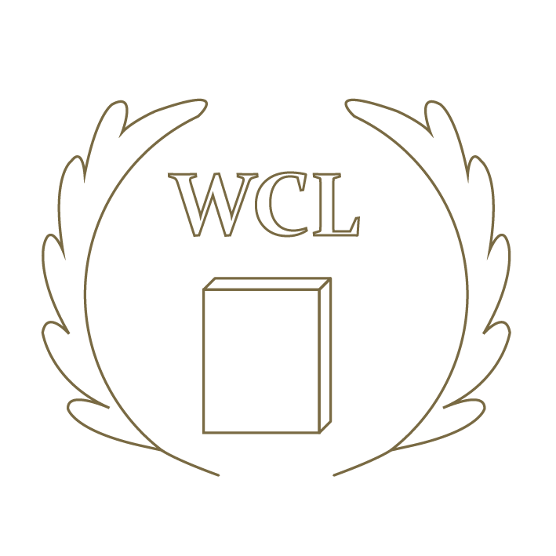

這是一座在哪裡發現都不奇怪也不要驚訝的圖書館，這裡擁有世界上所有的書本。 圖書館會選擇能夠來到這裡的人，而他朝你打開了大門。

偶爾可以看到像是線條的小東西在圖書館內亂飛，不過根據櫃檯三姊妹的說法，書籤都是他們做的，也會幫忙書本的整理。
不過基本不會接觸圖書館的遊客，要找到他們是很困難的。
每個人都會拿到一張自己的書籤，同時也是借書證。
固定都是紙質的，正面會畫上很好看的圖案，角落會寫上你的名字，
背面會因為你借閱的書籍數量有越來越多的圖案，
上面一定會綁一條絲帶。
似乎不會因為年代或是水份等等的外力毀損。